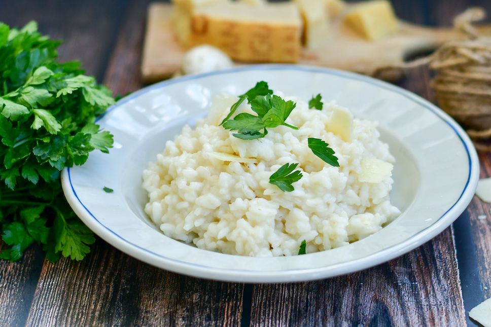

Home
Risotto Bianco

Description:
Risotto bianco is the base recipe for many other types of risotto
making it a very easy and delicious recipe to try out, either ot eat
as is or to use as the base for making mushroom risotto or pumpkin
risotto or a wide variety of othe risottos.
Ingredients
- 50g of Butter
- A cup of risotto rice
- 500ml of stock
- A cup or two of shredded parmesan cheese
- 90ml of olive oil
- White wine
- One onion
- One finger of Celery
Steps
- First we heat the olive oil and 25g of butter
- Once the butter is melted we add one chopped onion and sweat it
- After a few minutes, no more than 3, we add the chopped celery
- We sweat it all a couple of minutes and then add the rice
- We mix everything and add a nice splash of white wine
- After two minutes or so we start slowly pouring 250ml of stock
- We stir continuously for ten minutes
- We add another 250ml of stock and again stir for ten minutes continuously
- After those ten minutes we remove from heat and add 25g of butter and the cups of cheese
- We stir to mix it all and cover for 3 minutes
- Serve with olive oil, sprinkled parmesan and parsley for garnish